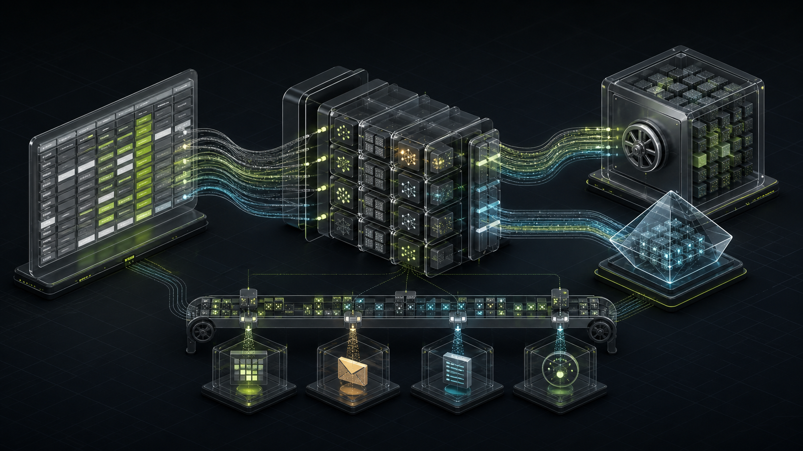
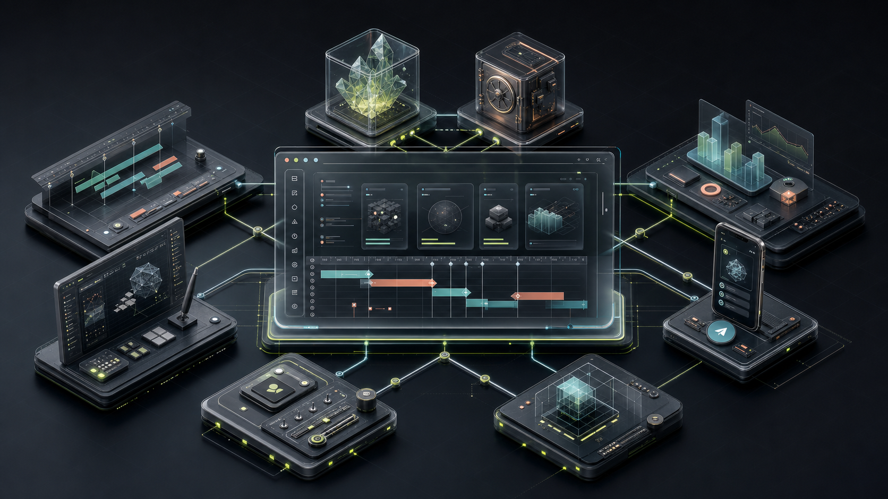

Операционный таймлайн
Плотное представление сроков, этапов и статусов без ручной сборки картины проекта.
SVG timelinefiltersmilestones
DTM превращает привычный рабочий контур дизайн-отдела в наблюдаемую систему: единый таймлайн задач, нагрузка команды, вложения, доступы и автоматизация без ручной сборки отчётов.
DTM оставляет привычную таблицу источником рабочего процесса, но даёт команде интерфейс, в котором сроки, люди и движение задач читаются сразу.
Видео не удалось запустить в этом браузере.
Открыть потокDTM строится вокруг реального производственного процесса дизайн-команды: разрозненные строки превращаются в подготовленную модель для ежедневной работы, аналитики и автоматизации.
Плотное представление сроков, этапов и статусов без ручной сборки картины проекта.
Срезы по дизайнерам, типам задач и загрузке на том же snapshot-контуре.
Yandex OAuth, Telegram Mini App, временные ссылки и masked/full режимы.
Очереди, workers, рендеринг, напоминания, вложения и наблюдаемая публикация результата.
Архитектура разделяет стабильный пользовательский read-path и тяжёлые mutation-paths. Браузер получает подготовленную картину, а долгие операции исполняются отдельно и становятся видимыми только после публикации.
Python backend нормализует рабочие данные, строит snapshot-артефакты и отдаёт browser-safe payload. Тяжёлые действия проходят через Message Queue и workers.

React/Vite SPA объединяет desktop timeline, аналитику, mobile/Telegram shell, admin и runtime workbench. Контракты данных и доступов вынесены из presentation-слоя.

UI не собирает тяжёлую карточку на лету: браузер читает подготовленный payload.
Долгие и рискованные действия оформлены как команды с понятным статусом.
Backend, frontend и auth взаимодействуют через явные контракты и runtime-конфиг.
Диагностика, метрики и runbooks встроены в систему, а не добавлены постфактум.
Код разделён по ответственности: backend владеет данными, автоматизацией и публикацией; frontend — рабочими интерфейсами, доступом и визуальными инструментами.